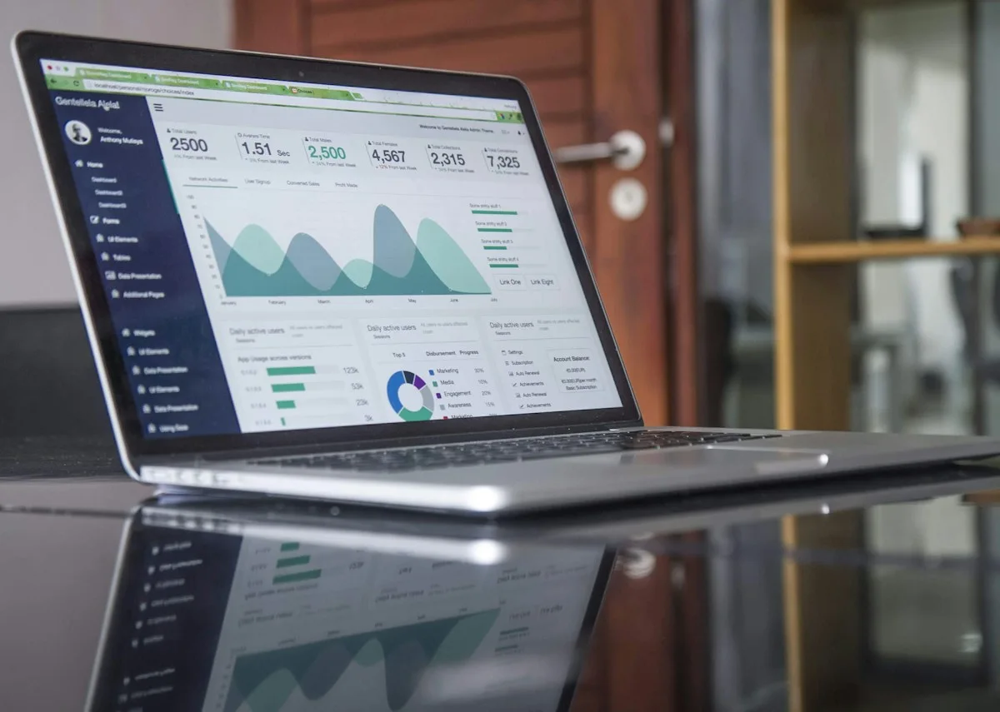
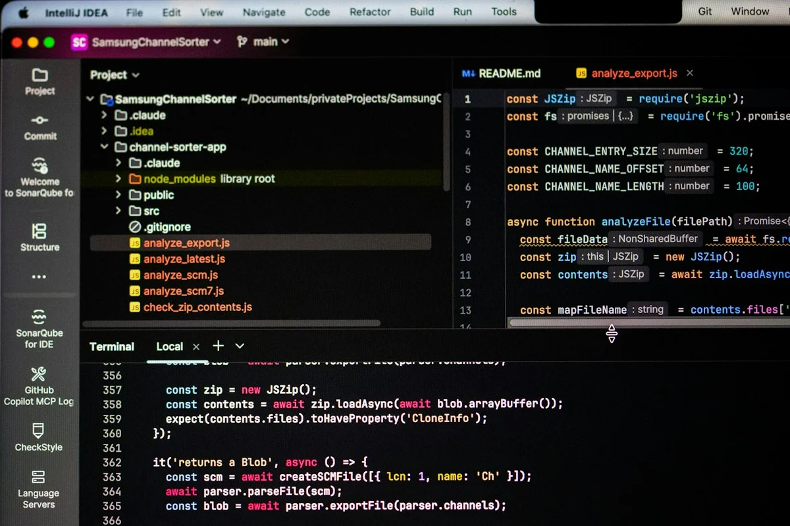
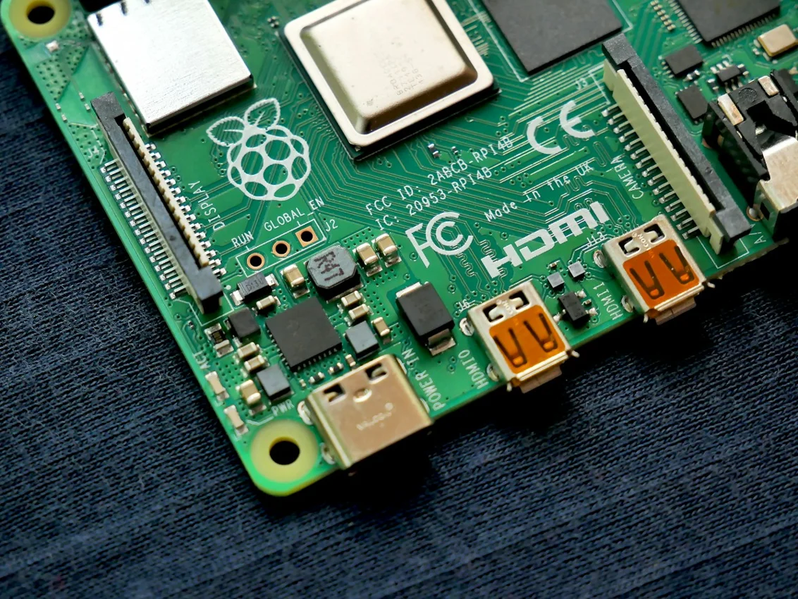
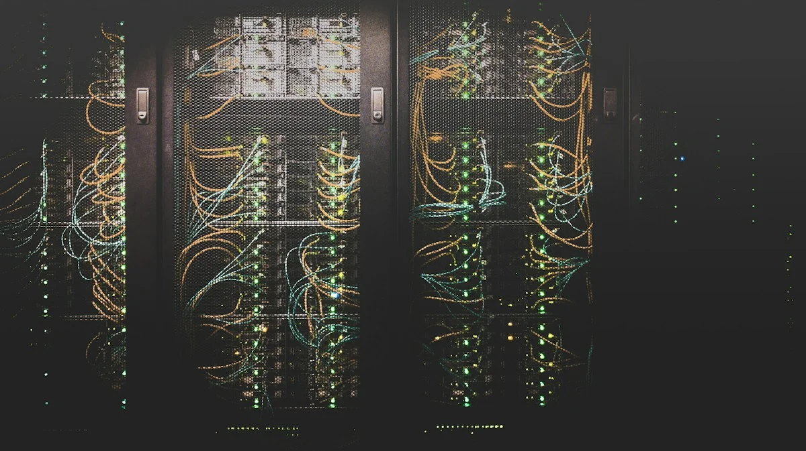

One connected service portfolio.
Writing, research, analytics and digital development in one place. Explore the scope of each service, then discuss the requirements, delivery responsibilities and tools for your project.
Technical Content Writing
Technical articles, documentation, research reports, academic writing support and SEO content, shaped around your subject, audience and brief.
Explore scope and deliverables
Project scope
- Technical articles, AI explainers and SEO content
- Documentation, requirements and business reports
- Research reports, literature review support and presentations
- Academic assignment planning, draft editing and referencing support
Agreed deliverables
- An agreed outline and research approach
- Audience-focused draft with source attribution
- Technical review, editing and agreed revisions
How we work
We start with the reader, purpose and subject matter. I research the topic, agree the structure, develop the draft and refine it against your feedback.
- Google Docs
 Microsoft Word
Microsoft Word- Grammarly
- Markdown
- Zotero
 WordPress
WordPress

Research, Data Analytics & AI/ML
Connect your research question with the right analysis: literature reviews, statistics, forecasting and dashboards, supported by clear interpretation.
Explore scope and deliverables
Project scope
- Data preparation and exploratory analysis
- Statistical analysis and forecasting
- Dashboards and research reporting
- Prediction and time-series forecasting
- Natural language processing and retrieval workflows
- Computer vision and object detection
- Recommendation prototypes and model evaluation
Agreed deliverables
- Prepared data and documented analytical steps
- Charts, tables and an agreed dashboard or report
- Interpretation of findings, assumptions and limitations
How we work
We define the question and available data, check quality, choose an appropriate method and communicate the findings with transparent interpretation.
- Python
- R
 SQL
SQL Power BI
Power BI- Tableau
 IBM SPSS
IBM SPSS Excel
Excel- MySQL
- PyTorch
- scikit-learn
 TensorFlow
TensorFlow OpenAI
OpenAI Hugging Face
Hugging Face
Website, Web & Mobile Application Development
Build a professional digital presence with responsive websites and web applications that bring content, usability and practical functionality together.
Explore scope and deliverables
Project scope
- Responsive business and portfolio websites
- Purpose-built web application interfaces
- Database-backed learning and business workflows
- Responsive web applications and progressive web apps
- Cross-platform mobile application planning
- Interface design, API integration and usability review
- Platform selection and release requirements
Agreed deliverables
- An agreed page structure and feature scope
- Responsive interfaces and scoped server-side functionality
- Navigation checks, documentation and handover
How we work
We clarify the audience and user journeys, agree content and features, develop the interface and functionality, then review the site across screen sizes.
- HTML
- CSS
 JavaScript
JavaScript React
React TypeScript
TypeScript- PHP
- MySQL
 Git
Git- React Native
- Flutter
 Swift
Swift Kotlin
Kotlin- Vue.js
Customised CRM Solutions
Organise customer information, lead management and follow-ups through CRM interfaces designed around your business workflow and reporting needs.
Explore scope and deliverables
Project scope
- Lead and customer records
- Tasks, follow-ups and workflow interfaces
- Reporting and role-based views
Agreed deliverables
- A requirements and workflow map
- Agreed customer, lead and dashboard features
- Documentation and a practical handover
How we work
We map how information moves through your business, define the essential records and permissions, and shape the interface around the agreed process.
- PHP
- SQL
- MySQL
- HTML
- CSS
Digital Marketing
Give your digital communication a clear direction through SEO website copy, editorial planning and campaign content grounded in audience needs.
Explore scope and deliverables
Project scope
- SEO content and website copy
- Editorial planning and campaign content
- Content review and analytical reporting
Agreed deliverables
- Audience and content-direction brief
- A practical editorial plan and agreed copy
- Content recommendations and a reporting approach
How we work
We establish your audience, message and channels, research content needs, develop an editorial plan and refine the agreed material.
 Google Analytics 4
Google Analytics 4- Google Search Console
- Google Ads
 Meta Business Suite
Meta Business Suite- WordPress
Social Media Branding
Express your brand consistently through a defined voice, social profile messaging, content planning and audience-focused post copy.
Explore scope and deliverables
Project scope
- Brand voice and profile messaging
- Content pillars, post copy and calendars
- Consistent social communication
Agreed deliverables
- A brand-message and voice guide
- An agreed content calendar and post copy
- Creative direction and profile-content recommendations
How we work
We clarify how you want to be understood, define your content pillars and tone, then develop a manageable publishing plan and consistent messages.
 Canva
Canva- Meta Business Suite
- Buffer

Data Annotation
Clear labelling standards for AI and machine learning datasets.
Explore scope and deliverables
Project scope
- Image, text, audio and video annotation workflows
- Human review with appropriate AI-assisted tools
- Labelling guidelines, validation and quality checks
- Secure dataset organisation and handover
Agreed deliverables
- An agreed requirements and feasibility brief
- Defined implementation scope and review criteria
- Documentation and handover for agreed deliverables
How we work
We clarify the problem, assess feasibility, agree the scope and technical responsibilities, then review the deliverables against your requirements.
- Label Studio
SuperAnnotate
- CVAT
- Python
 AWS SageMaker Ground Truth
AWS SageMaker Ground Truth

IoT Integration
Connect devices, data and interfaces around a practical monitoring workflow.
Explore scope and deliverables
Project scope
- Device communication and data collection planning
- Real-time monitoring dashboards
- Edge processing and cloud integration
- Alerts and predictive maintenance prototypes
Agreed deliverables
- An agreed requirements and feasibility brief
- Defined implementation scope and review criteria
- Documentation and handover for agreed deliverables
How we work
We clarify the problem, assess feasibility, agree the scope and technical responsibilities, then review the deliverables against your requirements.
- MQTT
- Azure IoT
- AWS IoT
- LoRaWAN
- Raspberry Pi

Cloud & DevOps
Plan repeatable deployments and infrastructure suited to your application.
Explore scope and deliverables
Project scope
- Cloud deployment and migration planning
- Continuous integration and delivery workflows
- Infrastructure as code and environment management
- Containerisation, monitoring and handover
Agreed deliverables
- An agreed requirements and feasibility brief
- Defined implementation scope and review criteria
- Documentation and handover for agreed deliverables
How we work
We clarify the problem, assess feasibility, agree the scope and technical responsibilities, then review the deliverables against your requirements.
- AWS
- Azure
 Google Cloud
Google Cloud Docker
Docker Kubernetes
Kubernetes Terraform
Terraform
Custom Software Development
Translate specific operational needs into an agreed application scope.
Explore scope and deliverables
Project scope
- Requirements gathering and software architecture
- Custom application interfaces and integrations
- Modernisation and migration planning
- Testing, maintenance planning and documentation
Agreed deliverables
- An agreed requirements and feasibility brief
- Defined implementation scope and review criteria
- Documentation and handover for agreed deliverables
How we work
We clarify the problem, assess feasibility, agree the scope and technical responsibilities, then review the deliverables against your requirements.
- React
- TypeScript
 Node.js
Node.js- Python
 PostgreSQL
PostgreSQL MongoDB
MongoDB
Technology in context.
Possible applications across six sectors, shaped around the organisation, users and data involved. These are project directions to discuss during discovery.
Healthcare
- Patient-management interfaces
- Telemedicine workflows
- Health-data reporting
- Research and AI prototype support
Education
- Learning management systems
- Virtual classroom interfaces
- Educational applications
- Assessment and learning analytics
Fintech
- Financial dashboards
- Payment-provider integrations
- Risk-analysis prototypes
- Fraud-pattern exploration
Real Estate
- Property listing websites
- Lead and customer management
- Virtual-tour integrations
- Property-management dashboards
Manufacturing
- IoT monitoring interfaces
- Predictive maintenance analysis
- Supply-chain reporting
- Quality-control analytics
Retail & eCommerce
- Online storefronts
- Inventory and sales reporting
- Recommendation prototypes
- Connected customer workflows
The right stack for the brief.
An ecosystem of tools to consider when planning a solution. Selection depends on requirements, compatibility and the agreed delivery scope. My hands-on skills and completed work are documented on the About and Projects pages.
Frontend
- React
- Vue.js
 Angular
Angular Next.js
Next.js- TypeScript
 Tailwind CSS
Tailwind CSS
Backend
- Node.js
- Python
 Django
Django- FastAPI
- Java
- Spring
- .NET
Mobile
- React Native
- Flutter
- Swift
- Kotlin
- Ionic
- Expo
Cloud & DevOps
- AWS
- Azure
- Google Cloud
- Docker
- Kubernetes
- Terraform
Databases
- PostgreSQL
- MongoDB
- MySQL
- Redis
- Elasticsearch
- Cassandra
AI & machine learning
- TensorFlow
- PyTorch
- OpenAI
- Hugging Face
- scikit-learn
- Keras
IoT & embedded systems
- MQTT
- Azure IoT
- AWS IoT
- LoRaWAN
- Raspberry Pi
- Arduino
Testing & quality
- Jest
- Cypress
- Selenium
- Pytest
- JUnit
- Postman
A considered approach.
From brief to handover.
Clear requirements, careful research
and a collaborative review process.
Research-led writing
Clear structure, careful research and source attribution, shaped around your subject and the needs of your readers.
Technical clarity
Technical explanations tailored to the intended audience, with terminology, depth and format agreed in the brief.
Transparent analysis
Documented analytical steps, clearly explained findings and an honest account of assumptions and limitations.
Purposeful development
Websites, applications and CRM workflows shaped around agreed requirements, practical user journeys and responsive interfaces.
Consistent communication
Brand messaging, website copy and social content developed around a coherent voice and a clear audience.
An agreed delivery process
Scope, deliverables, review stages and handover discussed at the outset, with feedback built into the working process.
Share your goal, audience and timeline. We’ll define the deliverables and a practical route from brief to completion.
Discuss your projectA clear process.
A shared understanding.
Understand
Clarify your goals, audience, scope and deliverables.
Research
Investigate the subject, evidence and technical requirements.
Create
Develop the content, analysis or digital experience.
Refine
Review together and improve the agreed deliverables.
Your questions,
answered.
Who is Soumi Ganguly and what technical content does she write?
I am Soumi Ganguly, a technical content writer with more than four years of experience. I write research-based technology articles, AI and data science explainers, technical documentation, SEO content and analytical reports. Each brief is shaped around its audience and purpose.
Can you combine writing with data analysis?
Yes. My work combines Python, R, SQL, Power BI, Tableau, Excel and IBM SPSS with statistical analysis, visualisation and evidence-based reporting.
Do you work with international clients?
I welcome remote enquiries from businesses, recruiters, researchers and universities in the UK, USA and other international markets. Scope, communication and deadlines are agreed at the start.
Do you develop websites and customised CRM systems?
Yes. I offer website development, web application development and customised CRM solutions, alongside digital marketing and social media branding services.
How can we start a project?
Use the contact form or email with your project goal, audience, deliverables and timeline. I review the requirements so we can agree the scope, communication and next steps.